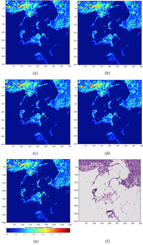

Image Super-Resolution
Image Super-Resolution for Scanning Acoustic Microscopy.
Scanning acoustic microscopy (SAM) is an imaging modality used to obtain 2D maps of acoustical and mechanical properties of soft tissues and uses ultrasound transducers operating at very high-frequencies. Such transducers are challenging and costly to manufacture, and SAM systems at higher frequencies become more sensitive to experimental issues. Nevertheless, biomedical applications of SAM often require spatial resolutions nearly as good as light microscopy. In addition, stained histology photomicrographs of thin sections of tissues are easily obtained with the necessary resolution and accuracy. Consequently, the aim of this study is to introduce a bilateral approach that enhances the resolution of SAM images by leveraging the co-registered high-resolution histology image. We propose to use bilateral weighted total variation regularization to solve the super-resolution problem. A fast matrix-less solver is developed by utilizing the Alternating Direction Method of Multipliers (ADMM) and solving the least squares problem in one ADMM step in the Fourier domain. Reconstruction results on experimentally recorded SAM and histology data show promising improvement over the classical techniques.
Overview of the study
The goal of this work is to use signal processing methods applied to SAM images obtained using frequencies lower than warranted for a specific investigation. A classic approach using total-variation deblurring on the low resolution SAM image is presented in previous study and has shown promising results on simulated SAM data. Here, we make use of digitized histology photographs of the same sample obtained after H&E staining. The histology photomicrographs have finer resolution than the 2D maps obtained with SAM but originate from a different contrast mechanism. Nevertheless, there is expected similarity between the edge locations with significant intensity changes in the histology and SAM images. In order to utilize these similarities, we extend the idea of bilateral filtering into the super-resolution formulation. Specifically, edge adaptive weights derived from the histology image are applied to relax the regularization penalty at pixels with expected edges.
Sample result
This figure shows (a) The interpolated LR image using bicubic interpolation; (b) SR image without bilateral weights (conventional TV norm in two directions); (c) SR image with bilateral weights for horizontal and vertical edges; (d) SR image with bilateral weights for 0°, 45°, 90°, and 135° edges; (e) same region in the HR image; [scale=1μm] (f) registered corresponding histology image of the same region.
